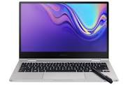

Tipos de computadora Supercomputadoras. Los aparatos de mayor potencia del mundo son, en realidad, conjuntos de computadoras distintas integrados en una sola unidad, que pueden potenciarse de manera exponencial. ... Mainframes. ... Computadoras personales (PCs). ... Computadores portátiles (laptops, netbooks). ...
